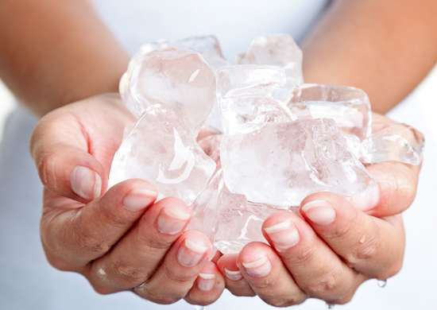

Delicious Things You Can Make with H2O
Ice Cubes

Try this delicious frozen treat on a hot summer day!
Ingredients
- 2 cups of water (approximately)
- 2 tablespoons of water (additional if needed)
Directions
- Take ice trays over to the sink and fill them with cold water. (Hot water will freeze faster and more clear).
- Place the water filled ice trays into the freezer.
- Shut the door to the freezer.
- Be sure to leave for around 4-6 hours at least to make sure it is frozen.
Back to Recipes